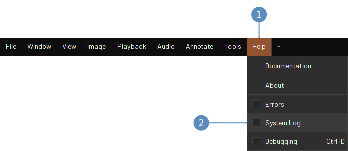
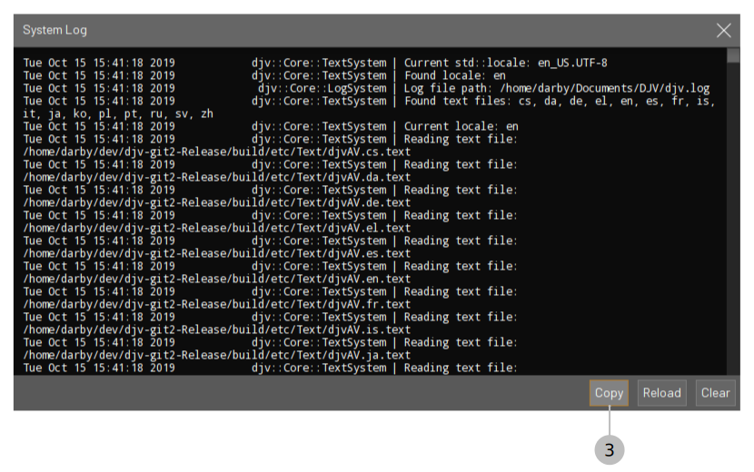

If you find a bug with DJV please report it by creating an issue on GitHub. Describe what led up to the bug and whether or not it is repeatable. Include a copy of the DJV system log by copying and pasting it from the application:


You can also manually copy the log file from the path: "Documents/DJV/djv.log".
If you would like to request a change to DJV please create an issue on GitHub to provide an opportunity for discussion and feedback.
To start working on the change fork the DJV repository using the GitHub website and clone the fork to your local machine:
git clone https://github.com/you/DJV.git djv cd djv
Add the DJV repository as an upstream to keep your source code up to date:
git remote add upstream https://github.com/darbyjohnston/DJV.git
Create a new branch to do your work in:
git checkout -b mychange upstream/master
You can fetch and merge the latest changes like this:
git fetch upstream git merge upstream/master
Follow the build instructions for Linux, Apple macOS, or Microsoft Windows.
When making your change please follow the coding convention and style of the file you are working in. Once the change is ready create a pull request on GitHub. Use the git rebase and squash functionality to keep the change as clean as possible.